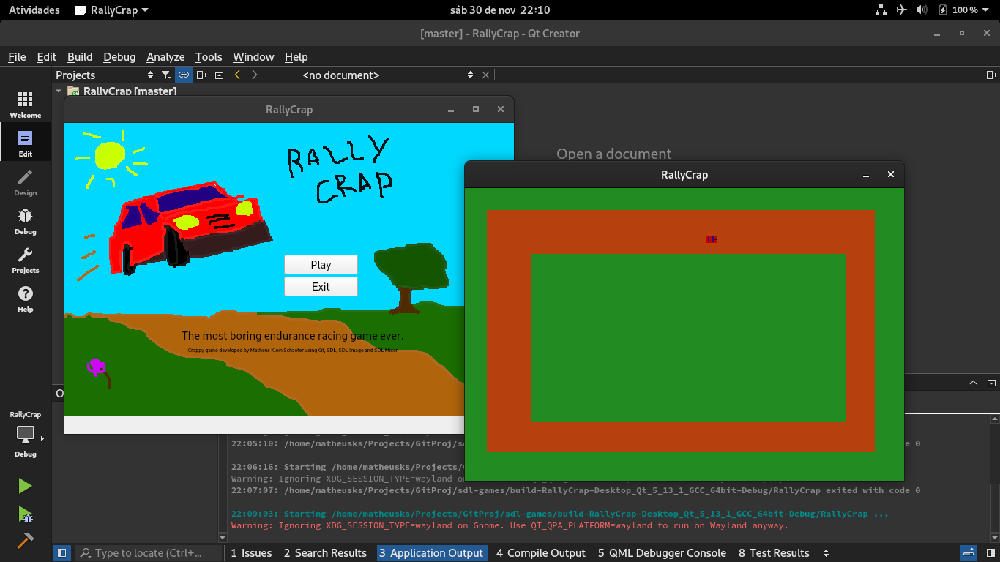
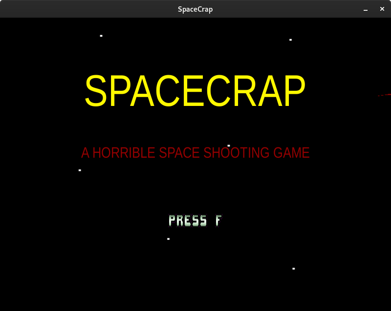
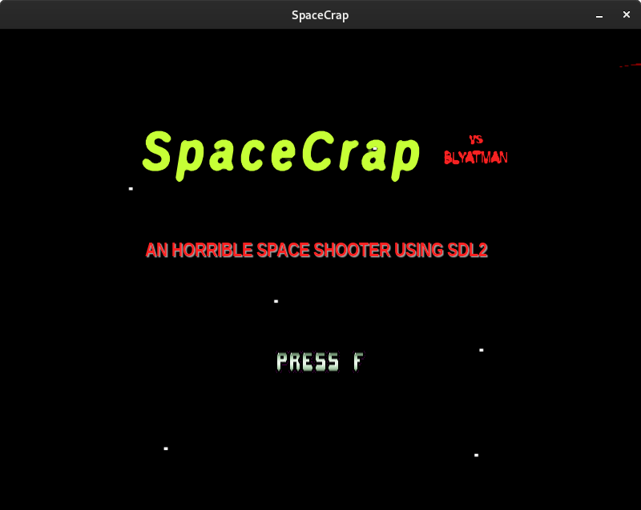
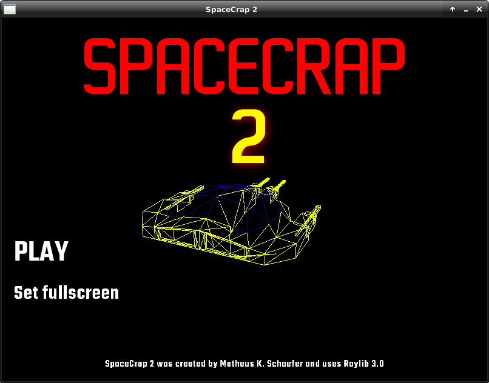
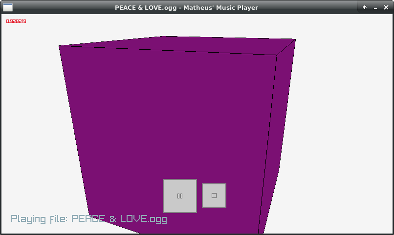
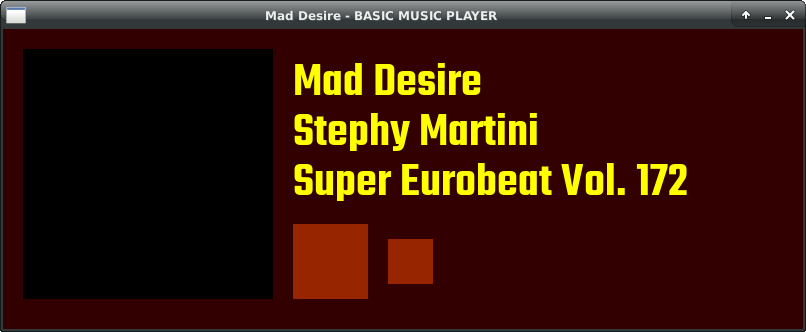
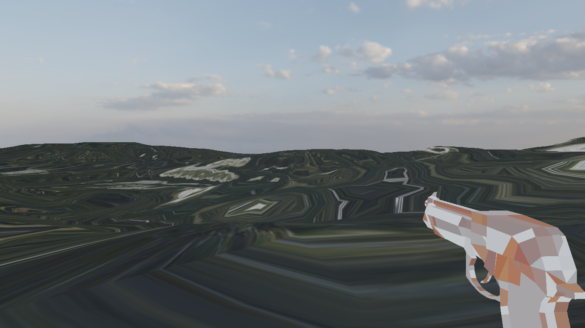

Showcase
This section includes some screenshots from my own projects, either featured in this website or private, unfinished ones. Professional projects aren't featured due to NDAs.
RallyCrap
This is a screenshot from a later version of RallyCrap, one of my first games without the use of a game engine, running from Qt Creator IDE. No longer in development.

SpaceCrap
This is some screenshots from early development and the released ones as well. SDL is a powerful tool for game development.
 
SpaceCrap 2
This is some screenshots from the released version of SpaceCrap 2. This time, I used Raylib instead of SDL.

Super Basic Music Player
Few screenshots from testings that ended up being SBMP later. Earlier in 2022, SBMP was built over Raylib, but I changed to SDL later.
 
Unnamed OpenGL rendering app
This is a screenshot from a attempt at doing a scene renderer with terrain and PBR textures using SDL 2 and OpenGL. The skybox is a 8k HDR image and was rendered fine, but UV mapping from the map failed during export to IQM (which is used by my app) so the terrain and gun textures doesn't look alright. Despite this, it could manage to load both the gun model, textures, a 35 km² terrain mesh and a song under 300 ms on a HDD. However, since SDL 3 is coming next year, effectively making all my OpenGL efforts already obsolete, I won't be putting any more effort on this one. It isn't available publicly due to license issues. 